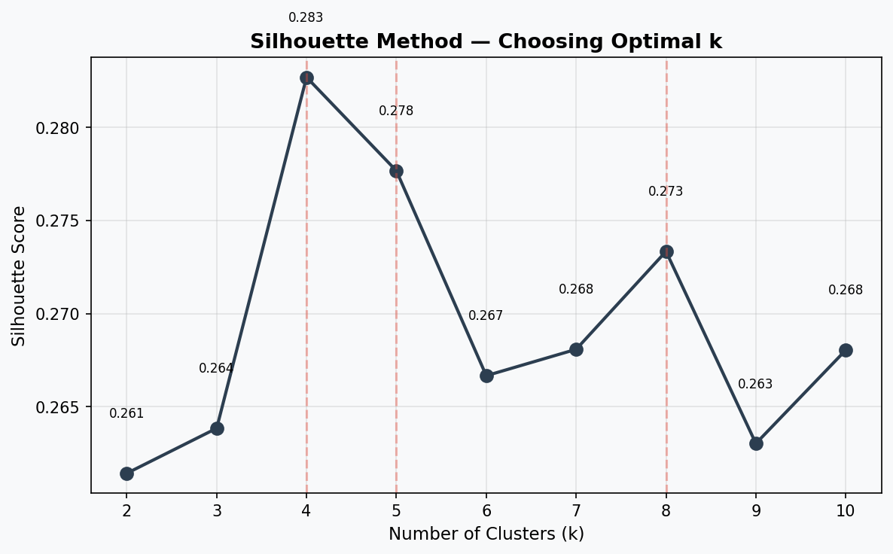
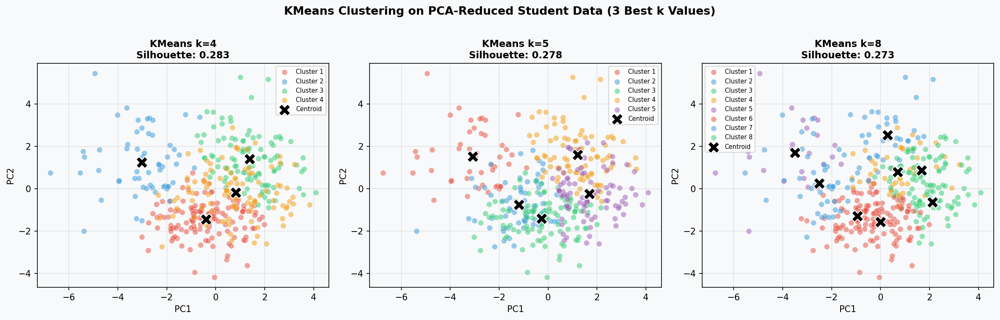
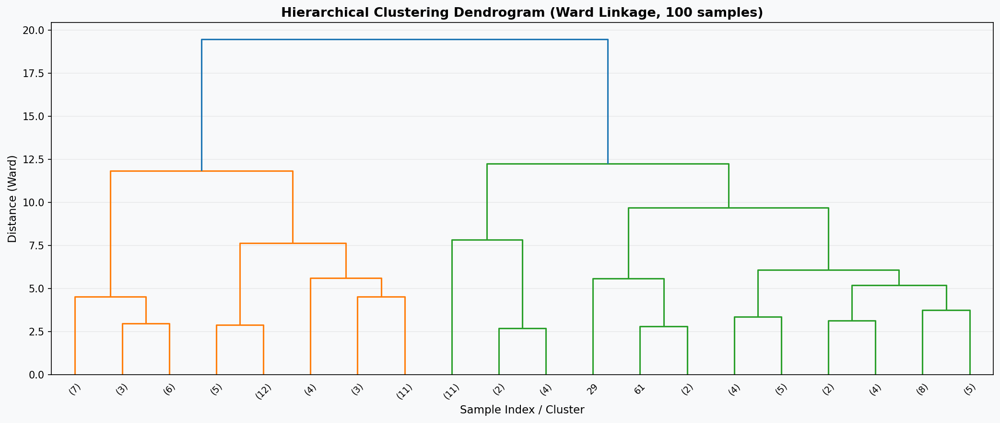
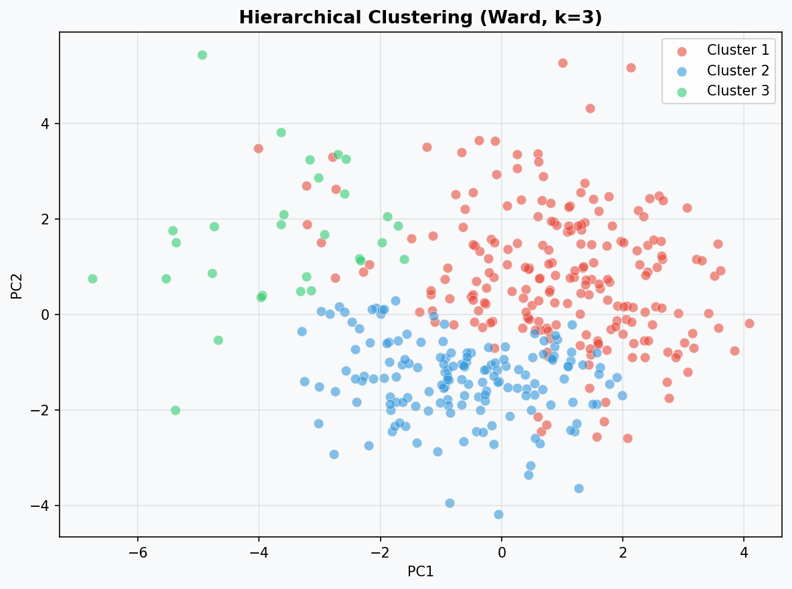
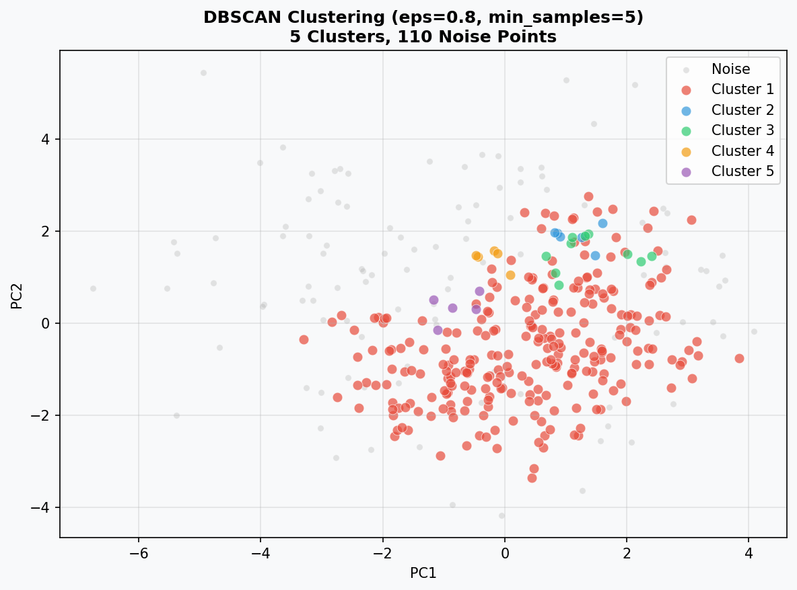

Clustering Analysis
Discovering hidden student groups using KMeans, Hierarchical Clustering, and DBSCAN.
📄 View Full Code →Clustering Algorithms Overview
Clustering is an unsupervised machine learning technique that groups similar data points together without predefined labels. Three major families of clustering exist, each with different assumptions about the shape and distribution of clusters.
K-Means Clustering
K-Means is a partition-based algorithm that divides data into exactly k clusters. It works by iteratively assigning points to the nearest centroid and updating centroid positions until convergence. K-Means is computationally efficient and works well with globular clusters of similar size. The choice of k must be specified in advance — methods like the Silhouette Score help identify the best value. Limitation: K-Means assumes spherical clusters and is sensitive to outliers and initializations.
Hierarchical Clustering
Hierarchical clustering builds a tree of cluster merges (dendrogram) without requiring k to be pre-specified. In agglomerative (bottom-up) clustering, each point starts as its own cluster, then pairs are merged based on similarity until one cluster remains. The linkage criterion determines how cluster distances are measured — Ward linkage minimizes the total within-cluster variance at each merge step, producing compact, balanced clusters. The dendrogram allows flexible selection of cluster count. Limitation: Computationally intensive for large datasets (O(n²) or O(n³)).
DBSCAN Clustering
DBSCAN (Density-Based Spatial Clustering of Applications with Noise) groups points that are closely packed in dense regions and labels low-density points as noise. Unlike KMeans, DBSCAN does not require specifying k and can discover clusters of arbitrary shape. Key parameters are eps (neighborhood radius) and min_samples (minimum points to form a core point). Advantage: Naturally identifies outliers. Limitation: Struggles with clusters of varying density, and parameter selection can be sensitive.
| Property | K-Means | Hierarchical | DBSCAN |
|---|---|---|---|
| Requires k? | Yes | No (cut dendrogram) | No |
| Cluster shape | Spherical | Any (depends on linkage) | Arbitrary |
| Handles noise | No | No | Yes |
| Scalability | High | Low–Medium | Medium |
| Sensitive to outliers? | Yes | Moderate | No (labels as noise) |
Data Preparation
The same cleaned, labeled dataset from the Data Prep and PCA sections was used. Preparation for clustering required several steps to ensure the data meets clustering requirements.
Preparation Steps
- Load
student-mat.csv, apply binary and one-hot encoding (same as PCA prep) - Remove the label (
performance,G1,G2,G3) — saved separately for later comparison with clusters - Verify all remaining features are quantitative only
- Normalize using StandardScaler (mean=0, std=1 per column)
- Apply PCA (n_components=3) to reduce to 3D — retaining 19.7% variance — for visualization and computational efficiency
The performance labels (Low / Medium / High) were retained separately and used only after clustering to evaluate how well the discovered clusters align with actual academic performance categories.

K-Means Clustering
Silhouette Method — Choosing k
The Silhouette Score measures how well each point fits within its assigned cluster versus neighboring clusters. A higher score (max 1.0) indicates better-defined clusters. We computed the silhouette score for k = 2 through 10 and selected the top three values of k.

Three Smart k Values Selected: k = 4, k = 5, k = 8
These produced the highest silhouette scores, suggesting meaningful cluster structure at each of these configurations. We explore all three below.
KMeans Results for k = 4, 5, and 8
Each plot shows the student data projected onto the first two PCA dimensions. Points are colored by cluster assignment (discovered by KMeans), and the black ✕ marks the centroid of each cluster.

Interpretation: At k=4 and k=5, clusters form distinct regions with relatively clear boundaries. Larger k values (k=8) fragment clusters into smaller, more overlapping groups that may correspond to sub-patterns in student behavior (e.g., distinguishing different study-time + alcohol combinations). Compared to the true performance labels (Low / Medium / High), KMeans with k=3–5 aligns reasonably with the natural performance groupings, though perfect separation is not expected given that 19.7% of variance is retained in the 3D PCA input.
Hierarchical Clustering
Agglomerative hierarchical clustering with Ward linkage was applied. Ward linkage minimizes the total within-cluster variance at each merge, producing compact, similar-sized clusters. The dendrogram visualizes the entire merge history.
Dendrogram

Dendrogram vs KMeans: The dendrogram reveals a similar structure — the largest merge distances occur around the 3–5 cluster level, corroborating the KMeans silhouette findings. Unlike KMeans, the hierarchical approach doesn't require specifying k upfront, and the dendrogram provides a richer view of progressive cluster merging at every level.
Hierarchical Clustering Scatter (k=3)

DBSCAN Clustering
DBSCAN was applied with eps = 0.8 and min_samples = 5. These parameters were chosen to identify meaningful dense regions while labeling sparse or outlier students as noise.

DBSCAN vs KMeans and Hierarchical: DBSCAN identifies fewer, denser core clusters and labels a subset of students as noise — these are likely students with unusual combinations of attributes (e.g., very high absences and very high study time). Unlike KMeans, DBSCAN does not force every student into a cluster, which is arguably more realistic. The number of clusters discovered by DBSCAN was lower than KMeans, reflecting the natural density landscape of the PCA-reduced data rather than pre-assigned groupings.
Conclusions
All three clustering algorithms reveal that student data contains meaningful groupings that go beyond a simple high/medium/low performance split. The clustering structure is complex — no single algorithm produces perfectly clean cluster boundaries — which is consistent with the reality that student outcomes are determined by many overlapping factors.
- KMeans (k=4–5) reveals that students broadly fall into groups characterized by combinations of study habits, absences, and social behaviors rather than grade alone.
- Hierarchical clustering confirms a natural grouping of 3–5 clusters, supporting the academic performance tiers observed in EDA.
- DBSCAN highlights that a minority of students are outliers — students whose profiles do not neatly fit any typical pattern, potentially representing at-risk learners deserving individual attention.
These insights suggest that data-driven clustering could help schools identify student sub-populations for targeted intervention — for example, prioritizing outreach to the "noise" points detected by DBSCAN or the low-performing clusters identified by KMeans.